Todos los ejemplos son ficticios. No se modificaron datos ni sesiones de la aplicación.
Las miniaturas son desplazables. Usa «Abrir PNG completo» y el zoom del navegador para revisar los textos. La barra móvil se coloca al final de la captura larga para no tapar contenido; estas imágenes no prueban su comportamiento fijo.
ESCENA 01
Actividades de Aunor
Días, lugares, estados y mensajes. «Por relacionar» sigue visible.
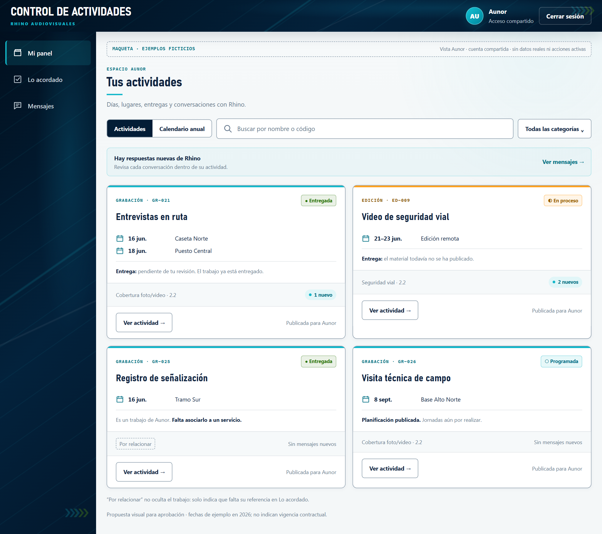
{kind=link}
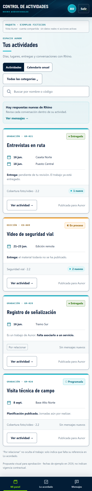
{kind=link}
ESCENA 02
Entrega · antes de confirmar
E-021 entregada; Aunor revisa el material y confirma por separado. Se ilustra la casilla ya marcada por el usuario, no una selección automática.
{kind=link}
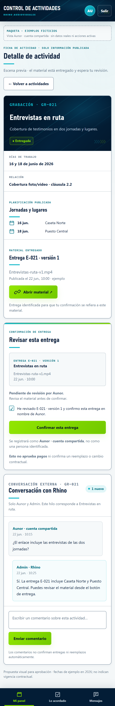
{kind=link}
ESCENA 03
Entrega · después de confirmar
Mismo material E-021. Confirmación atribuida a Aunor, con fecha; el estado Entregada no cambia.
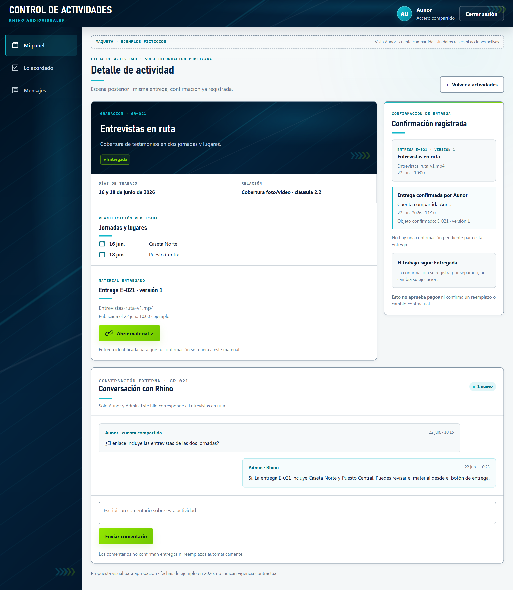
{kind=link}
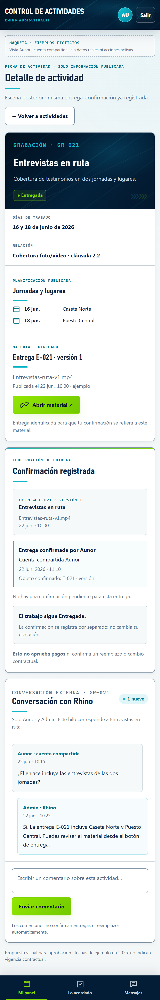
{kind=link}
ESCENA 04
Lo acordado
Lista simplificada de servicios, trabajos relacionados y pendientes de relación. No es un contador contractual.
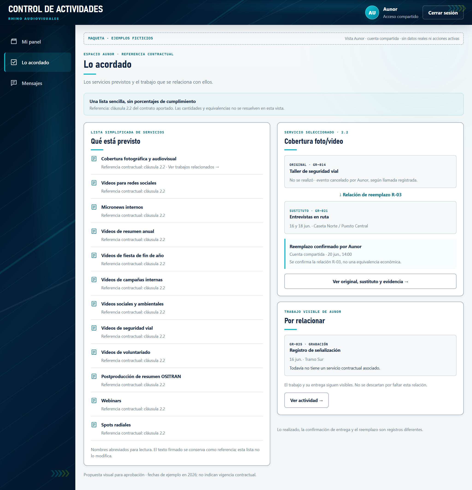
{kind=link}
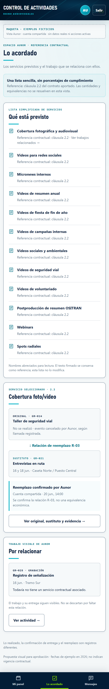
{kind=link}
ESCENA 05
Original, sustituto y evidencia
R-03 después de confirmarse: el original permanece, con su motivo. La nota de llamada y la confirmación son registros distintos.
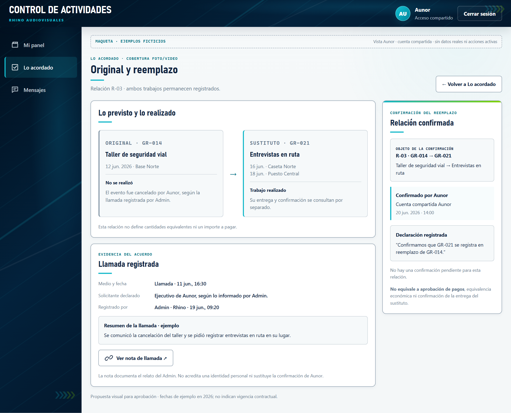
{kind=link}
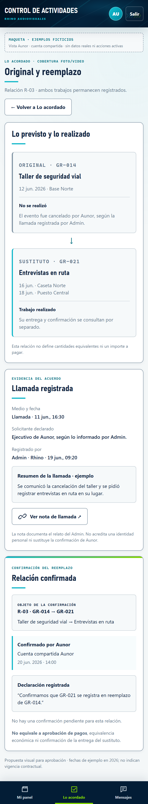
{kind=link}
ESCENA 06
Admin responde y registra
Escena anterior a publicar R-03. Solicitante declarado y registrador separados; Admin no confirma por Aunor.
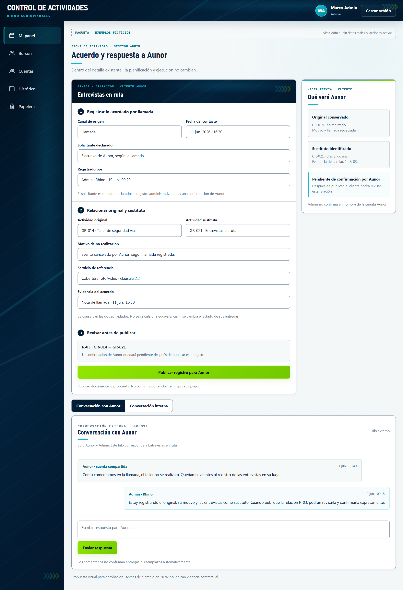
{kind=link}
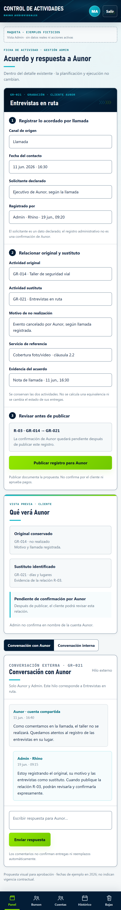
{kind=link}
ESCENA 07
El calendario anual conservado
Doce meses, detalle lateral y coincidencias. En móvil se muestran los doce meses completos; el detalle se abre como pantalla aparte, no se comprime a su lado.
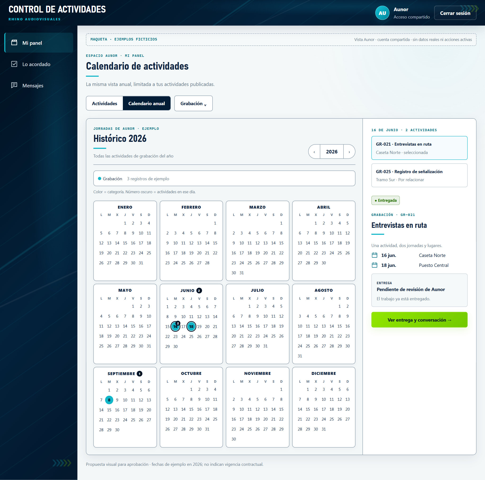
{kind=link}
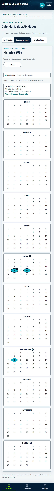
{kind=link}
ESCENA 08
Mensajes por actividad
Acceso rápido a los hilos externos. Los avisos pertenecen a la cuenta compartida, no a un ejecutivo identificado.
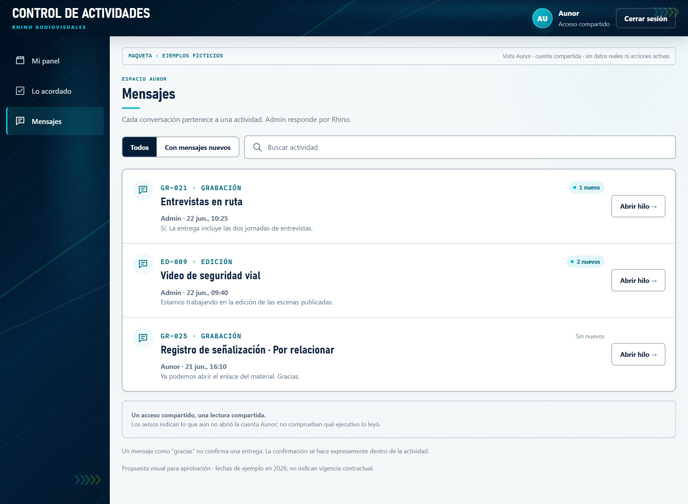
{kind=link}
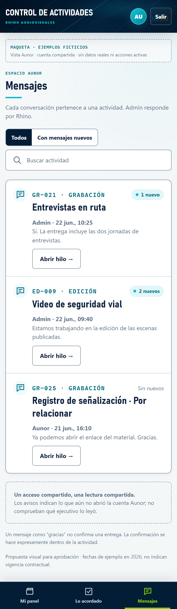
{kind=link}